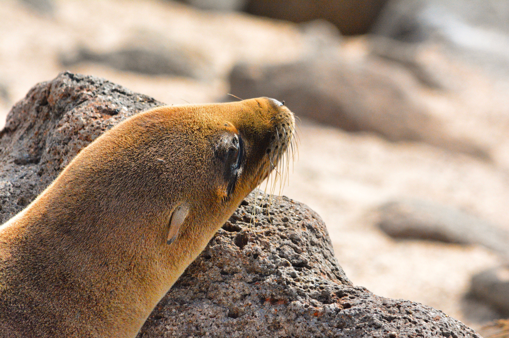
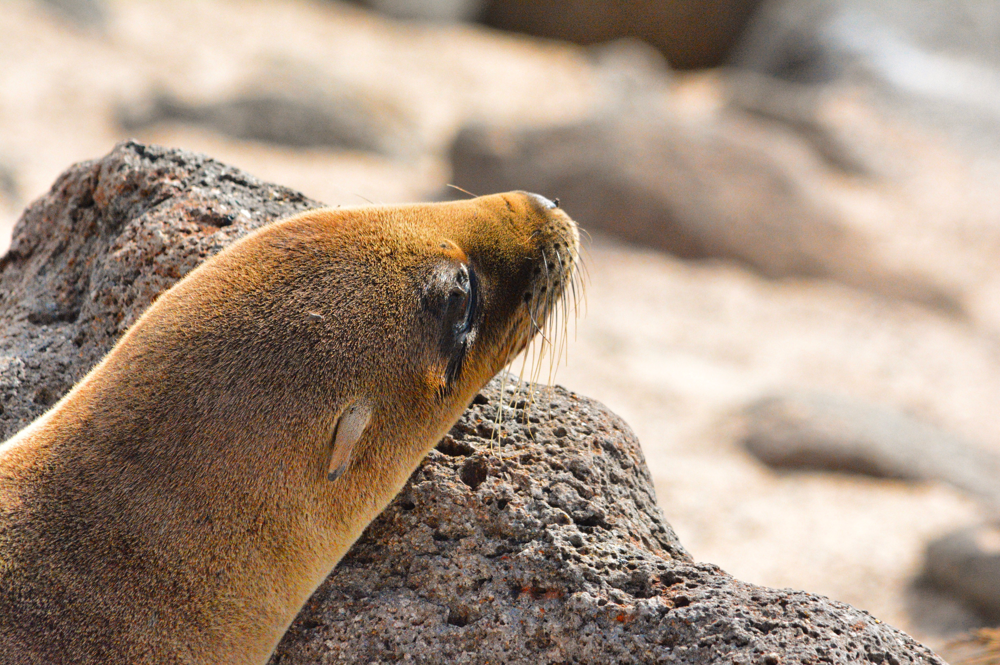
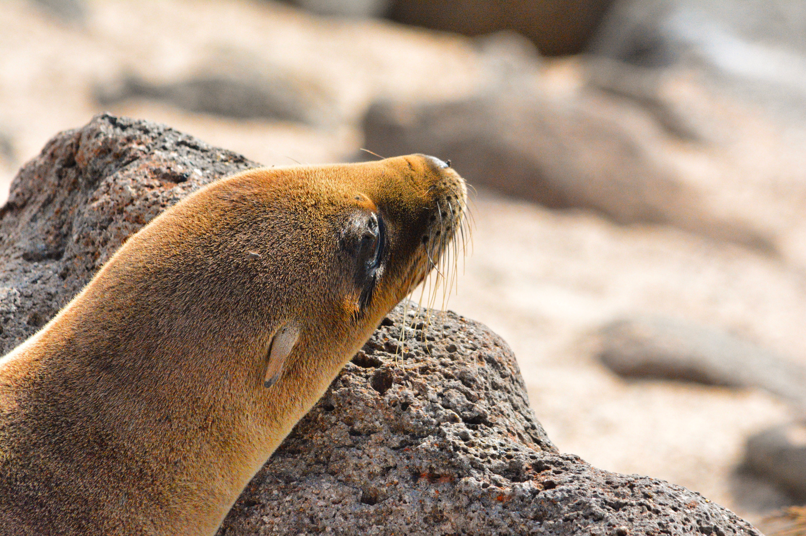
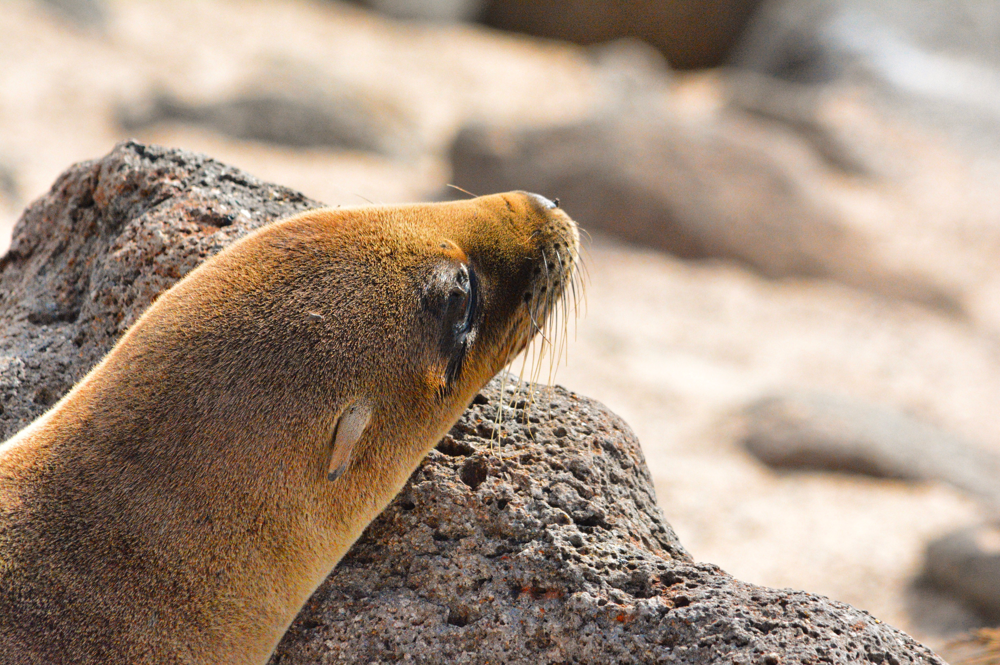

 

You should always strive to get the best shots without doing too much in post (if anything at all). But sometimes you find imperfections in your pictures, like a phantom spot due to a blemish on the camera sensor. Sometimes you do not get the color to pop. Your photo is over-exposed. The lighting was poor. So many factors both in and out of your control can prevent you from getting the most out of your pictures. And for situations such as these, proficiency in Photoshop is a must.
Here are a few examples of how I used to photoshop to enrich my photos! These photos were taken on a Nikon D7100.


Look at the lefthand photo of an adorable French Bulldog I passed on the street in Chlesea. You can see the color is flat, and the dog has a few belmishes around his mouth and eyes, plus his face is rather dark. With some Photoshop healing and a little adjustment of warmth, saturation, smoothing, shadow and contrast the picture becomes more inviting. I wanted to recreate the warm feeling that I felt when I first saw him. ☺


Here we have a father and son enjoying a beautiful day in prospect park. This picture was taken using a telephoto 300mm lense from about 150 yards away. The first picture, while the sharpness and focus is precise, the color could still use a little bit of adjustment. I wanted to improve the vibrance of the surrounding foliage and grass, along with the father's hat to show the twead pattern. However, saturation of the clothing proved to be overkill. The red pants, the orange jacket are already bright and vibrant enough. Too much post production would make the colors overwhelming and take away from the warmth and subtley of the image. The picture is of a father and son enjoying a stroll in a park, not a lazer light show!


This one I had a little more fun with. While there is a spot from a blemish on my sensor toward the top right of the image against the blue sky, some of these adjustments were made out of experimentation. The spot and the color needed adjustment, but removing the boat in the background through Photoshop healing was more for fun than neccesity.
For more photography, please click the icon below to check out my Instagram page!